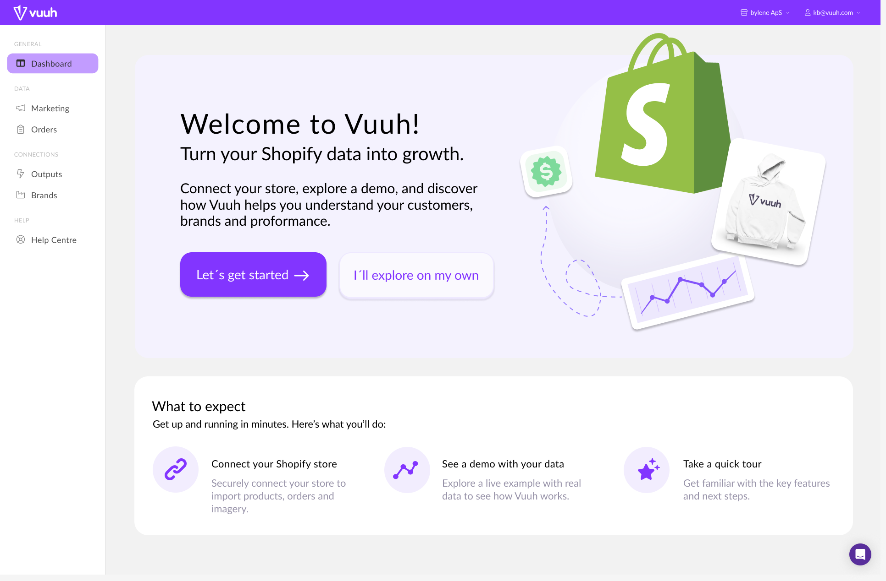
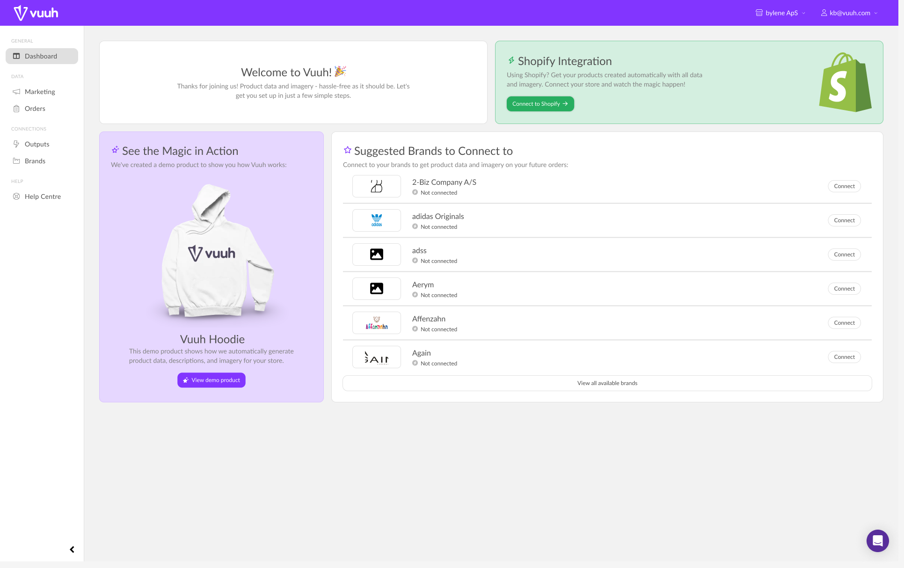

02 / UX og onboarding / Gruppe
Vuuh.
En tydeligere vej gennem opsætningen med Shopify.

Udfordringen
Vi skulle forbedre opstarten for Vuuhs Shopify-kunder. På det eksisterende dashboard konkurrerede flere handlinger om opmærksomheden. Det var uklart, hvor man skulle begynde, og hvornår opsætningen var færdig.
Jeg havde en central rolle i research og analyse, var med til at fastlægge designretningen og bidrog til Figma-prototypen og dokumentationen af vores valg.
Prøv opstarten.
Et forslag i Figma, ikke en aktiv Shopify-integration.
Hvor opstår tvivlen?
Vi brugte heuristisk evaluering, kognitiv gennemgang og fundkort til at undersøge oplevelsen. Tre problemer gik igen: uklare prioriteter, forskellige betegnelser i Shopify og Vuuh samt manglende feedback.
Den første integration var afgørende. Skift mellem platformene uden tydelig fremdrift eller bekræftelse kunne skabe tvivl. Derfor prioriterede vi opstarten frem for et redesign af alle funktioner.

Et tydeligt næste skridt.
Vi foreslog en guidet opsætning med tydelige næste skridt, instruktioner og fremdrift. Brandforslag fik lavere prioritet på det første dashboard, så kunden kunne koncentrere sig om integrationen.
Vi tog afsæt i principper om synlig systemstatus, konsistens og genkendelse frem for hukommelse. Målet var ikke bare en pænere side, men færre gæt undervejs.
Evaluering og refleksion
En tydeligere retning.
Men ikke alle svar endnu.
Det lagde vi mærke til.
Navigation med lav kontrast og uens statusfarver, blandt andet rød ved en aktiv forbindelse, bør forbedres. Næste version skal have klare etiketter og feedback, der ikke kun bruger farve. Vi har ikke gennemført en WCAG-verificering.
Den feedback, vi fik.
Resultatet er et forslag til onboarding i Figma, dokumenteret i prototypen og UX-analysen. En mindre evaluering gav positiv feedback fra deltagere, underviser og Vuuh, men viser ikke, at flere gennemfører opsætningen.
Det vil jeg arbejde videre med.
Jeg vil teste hele opsætningen med nye brugere og undersøge tvivl, gennemførelse, fejl og behov for hjælp. Jeg tager især med mig, at hver visuel ændring skal løse et konkret problem.
Forretningspotentiale
Færre forhindringer.
Bedre plads til at vokse.
- Flere gennemførte opsætninger
- Færre unødvendige supporthenvendelser
- Tilfredse kunder, der anbefaler Vuuh til andre
Nye Shopify-kunder kan få en mere tryg start, og Vuuh kan få færre spørgsmål om opsætning. Mulighederne bygger på analysens fund om vejledning og feedback, ikke på målte resultater.